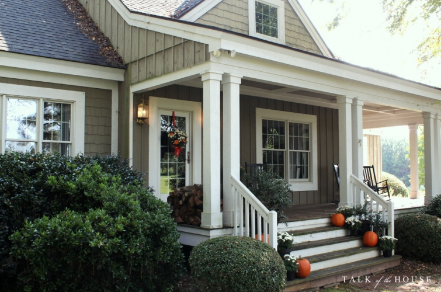
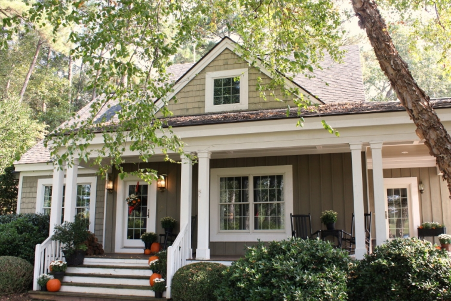

.png)
.PNG)
.PNG)
.PNG)
.PNG)
.PNG)
.JPG)
.JPG)
.PNG)
.PNG)


.jpg)
Happy Weekend! Â I just wanted to pop in for a quick post to show you the front porch decorating for October before it is time to change it for November. (Can you believe October is almost gone?!)
When it comes to decorating outside, I am not usually very creative…especially in the fall. Â Last week, Julie (in Asheville) left a question in her comment asking me when I first started doing holiday decorating. Â As I thought about it, I remembered that I started going “all out” with it when our children were young.
We would set up hay bales under a large chestnut tree in our old front yard, make a scarecrow, (adult size!) and surround him with pumpkins and mums and cornstalks…and sometimes even a wheelbarrow filled with pumpkins and gourds.
 But I don’t do that anymore.  Our home sits pretty far back from the road, and the traffic here is much faster than in our old neighborhood.  So I opt to go simple… just plain ol’ pumpkins and mums.  They say fall and welcome to our home just as well as the complicated scarecrow did. 🙂
But I don’t do that anymore.  Our home sits pretty far back from the road, and the traffic here is much faster than in our old neighborhood.  So I opt to go simple… just plain ol’ pumpkins and mums.  They say fall and welcome to our home just as well as the complicated scarecrow did. 🙂
The only thing that took a little more effort was the basket hung on the door. There is wire between the pieces of ribbon, and the ribbon and wire tie/wrap around a nail on the back of the door. Â The mums are small plants out of their pots sitting in ziplock bags. Â The small pumpkins are real, and the poor things are stuck on skewers that stand between the plants. (Sorry for the weird colors here. Â It was hard to photograph that red and orange in bright sunlight.)
Someone often asks about caring for the plants. Â I just water them in the bags. Â When the blooms are done, I take them out of the basket, and my husband plants them in the yard. Â They do come back and bloom again the following year.
More simple pumpkins and mums wait by our other door.  I found the metal lantern at our new Homegoods store. (Soooo glad to have that new store close by!  🙂 ) My plan had been to paint it red, but the silver looked just fine so no red paint on it…..yet. In looking at this next photo, I kept thinking What is on the glass of the lantern?  I thought it was a plastic film, but I went out to look and realized it was just a reflection of the floor…duh!
I have always always always had yellow mums in the fall, but with the red and orange color scheme everywhere here this year, I decided to go with white. Â Although I do love the cheerfulness of yellow, the white has worked out well. Â What do you think?
And now to the boring to-do list part of this Saturday post – reality check here.
I do a pretty good job keeping up the interior of our home (except for electrical and plumbing issues obviously… and the darn hot water heater that just went out. 🙠) My husband takes care of the outside, and maintains the yard.  The kids used to be great help with this – until they all went off and moved someplace else. Darn them!
The storms this summer have really been hard on our yard with a number of trees down and limbs, leaves, and pinecones frequently littering everything. His weekends have been filled with removing the debris and mowing grass. (No, we don’t pay a service to do it. Â Remember we are cheap diy people.)
So the exterior of the house has been sadly neglected…by everyone.  And it is bad.  Real bad. The House has been telling us that we have to give it more attention….majorly more.  While I was working, my excuse was I had no time for anything other than the inside, and since I have retired my excuse has been that it is too hot to work outside.  I’ll start on it this fall has been my mantra.  Well guess what.  The House has been telling me Kelly, it’s fall.  Time to get started working on me. Come outside. My husband started last weekend on the porch ceiling….the porch ceiling with the peeling sheetrock.  This picture shows one of the 3 places that needed attention with a 4th one started.
We had talked about putting simple lattice strips up over the seams and painting them the same color as the ceiling.  But I started looking on Pinterest (bad idea you know..) and of course I saw ceilings with beams….lovely beams. 🙂  And viola! We now have lovely beams on our front porch. (House, are you happy?)
My husband is currently out in the garage as I type this making one last one to go about where the front door is. Â And now I need to get busy on the extensive to-do list. Â First up…washing down the entire exterior to get rid of dirt and mildew. Â (House you are taking a shower today!) Â That will be followed by washing windows. Â The spray washing doesn’t do the windows well enough for me.
Other things on this to-do list (which will take a couple of months to complete) include repainting all that front porch furniture, and then the real fun starts. Â Painting the exterior…which includes removing all the board and batten from one entire end of the house and replacing it all with cedar shake shingles. Â And at some point, our wooden walkway needs replacing and some kind of walk put in to go to the front door. Â (There is not one there.) Â Perhaps all of this will make The House happy.
But all of this doesn’t mean that the inside won’t get any attention.  It will get less, but you know holiday decorating cannot be neglected. 🙂  In fact, there is one more Fall Decorating post for you next week.  I have had such fun with the back porch, and I can’t wait to show it to you! Here is a little sneak preview and a hint.
Oh, and all that outside work doesn’t mean all work…you know what they say about all work and no play, right? 🙂 We are taking in this movie sometime this weekend too.  Have you seen it?  It looks like it will be a good one.
So happy weekend whatever you have planned…whether it is working on a to-list, taking in a movie, or watching a football game. 🙂
I’m off to work on The House!
Until next time…


.PNG)
hello ……… love your blog…………. you talked about front porch furn …………. we cleaned then took to an autobody shop and when they did our color (black of course) they painted our stuff ………… cheap … 45 dollars for 5 pieces (2 wicker)… a steal at the price and saved about 5 hours …… what with the sanding and spot touch ups we would have had to do……… so god bless and good luck to you on all projects…………. thank you for inviting me in……
———————————————————————
What a great idea! Not sure our local guys would do that, but it is certainly worth checking into. Thanks for sharing that Donna!
Kelly
Hey, Kelly. I have already told you how I spent the weekend. I would much rather have spent the time scrubbing something/anything. LOL! I love the beams on your front porch ceiling. Happy Accident is what I would call that. I also like the white mums. The pumpkins and mums look so welcoming on your steps. I haven’t heard of the movie. The trailer looks like a movie our family will love. Thanks for sharing it.
————————————————————————
I know. Being at the hospital is scary, so yes, scrubbing would have been MUCH better. Thank you for the compliments on the beams. They are a vast improvement over the mess that was hanging up there. The movie was great. I hope you get to see it.
Kelly
Lovely decorations and beautiful porch!! I can so relate to the upkeep outside. We have neglected ours and spent several hours restaining part of our exterior Saturday. We’ve always hired it out but thought we might save money and tackle it ourselves. This “saving money” is for the birds. 😉 😛
———————————————————————
I agree on the saving money is for the birds! (I know I will be saying that when we start on the painting.) It seems like you spend a ton of time on it, but it only gets a little done. That is why I know it will take months for the 2 of us to do it. Good luck on your projects!
Kelly
Kelly, I highly recommend the movie Woodlawn. I have been to see it twice, with different friends each time. We all think it is an awesome movie!!
——————————————————————-
Yes, it has such a great story and message!
Kelly
The beams look great, and I’ll use that inspiration for some sagging ceilings inside our very old house. Your porch decorations look fabulous, too. I need to “amp up” my cucurbita display a bit. (Yeah, cucurbita — Google it!)
I haven’t seen “Woodlawn”, but accidentally showed up at the world premier, held in Birmingham about a week-and-a-half ago. It was quite a “do”, with many attendees in formal dress, local celebrities having photos made with fans, and the Woodlawn Marching Band waiting behind the wings. I definitely plan to see the movie. Hope you enjoy it!
———————————————————————-
The beams really ended up looking so much better than what was up there, and I hope they do the trick of preventing any more of that peeling sheetrock tape.
I had to look up your word. Gourd! I learned something new today. LOL
How cool to be at the world premiere for the movie!! Did you see Jon Voight? He was wonderful as Bear Bryant!
Kelly
Love it all , Kelly! Your hubby has got some mad beam making skills. They look fabulous!
You’ll have to let us know how the movie was. I saw the trailer when I went to see War Room. Looks great.
——————————————————————–
Thanks Lisa! My husband is a very good carpenter. 🙂 We saw the movie Sunday night, and it was fantastic! I hope you get an opportunity to see it.
Kelly
Hi Kelly,
I love the beams, that was a brilliant idea. The red and orange theme is very pretty and I love the simplicity of the white mums with the orange pumpkins.
Don’t get me started on “house to do” lists. Ours keeps growing. One or two items get removed only to discover there are 2-3 more we just discovered.
We used to go all out when the kids were youngsters. Now I decorate for the season with items I love! 🙂
xo,
Karen
———————————————————————
Pinterest can certainly provide inspiration for some good projects, can’t it? 🙂 I’m so happy you like the color scheme on the porch. It has worked well this year.
You are so right about the domino effect of house chores. Not fun. 🙁
Sounds like you have the right idea about seasonal decorating!
Kelly
Your front porch looks so pretty. The beams are such a pretty feature. The basket on the door is beautiful, & I really appreciate you revealing your assembly tricks–I never would have thought of the mums in zip-bags!! What a great idea using real plants in door baskets without the drippy, muddy mess. Your red & orange, highlighted by the white mums is perfect. Yellow mums are my favorite, and as always, I have them on my front porch, but I added some white & even purple in with flowering kale on my deck this year. it’s fun to try new fall colors!
——————————————————————-
Thank you for ALL your sweet words here, Merri Jo! You notice everything! LOL Ziplock bags come in handy for all sorts of things, don’t they? Seems like I have to buy another box every time we are at the store!
I am thinking of using kale in the decorating next year. It IS fun to try out new fall colors. I just wish the botanists could come up with a hybrid mum and hybrid pansies in a lipstick red. That would be perfect for winter! 🙂
Kelly
Hope you are enjoying your date night, I’ve heard good things about the movie. I think the beams are brilliant! I have enjoyed the fall decorating. How can it be that November is just a week away. I have to tell you my surprise this morning opening an email from Better Homes & Gardens. Videos of of your home from your Christmas shoot! Needless to say, I had to open all of them. What fun! Beautiful inspiration!
———————————————————————
You need to check out the movie. It is a very good one. Thank you for the compliments on the beams. All the credit goes to my skillful husband. I just gave him the idea. 🙂 Wow to the BHG email! I guess they are now promoting the videos. I would love to see the email. Glad you enjoyed all the little films. 🙂
Kelly
Kelly, I always look forward to seeing “Talk of the House”! You do an amazing job transforming your lovely home from one fun season/celebration to the next. I notice that you said you were cleaning the mildew and dirt off the outside of you home. What cleaning products do you use? Also, I cannot wait to see the movie Woodlawn. Thank you and happy fall! ~ Beth
———————————————————————–
Thank you for your kind compliments Beth. We normally use Clorox watered down and applied with a sprayer, but it wasn’t reaching high enough. So we headed to Lowes and purchased something called Home Armor E-Z House Wash that hooks directly to a water hose. It also sprays up high. It did pretty good, and I had to reapply to a couple of places twice for it to work. There are still some low spots that I am going to just have to scrub…the steps and the areas on the deck that get splashed when it rains. I will probably use Clorox mixed with water for that.
Happy fall to you too!
Kelly
Your outside always is so welcoming. I was surprised that there was sheet rock on your porch ceilings…..is this a southern thing? In the north, we could never put it outside. Just wondering…
Enjoy your outdoor time, we have cold weather in Pennsylvania and outside work is about to come to an end.
Have a great weekend
Jeanne
——————————————————————–
Jeanne, thank you for the compliment on the exterior of our home. Our ceiling is covered in exterior gypsum ceiling boards – made for use in sheltered areas. I think I call it sheetrock as a “generic” term. It is installed like sheetrock, and it is supposed to be weather resistant. I don’t know if this is a “southern” thing or not. I can’t believe it is really time for cold weather, but I suppose in Pennsylvania that happens much earlier than here! We are having cool, rainy weather now.
Stay warm!
Kelly
There’s always something needing doing, isn’t there? And, more often than not, the things we keep putting off. . . We’re DIY people, too. Today it was wash, wax, and vacuum out the cars. And there’s always something to do in the yard (if you can call it a yard) – but that’s more fun than most things. I was wondering why you’re replacing the board and batten with cedar shingles? Aesthetics? Or maintenance issues? We’re hoping to do an addition to our log cabin, and I had thought of using board and batten. Do you recommend it? Your pumpkins and mums are plenty festive for the season.
———————————————————————–
So true! I don’t think the to-do list for a homeowner ever ends. 🙠I managed to clean out the interior of my car a couple of weeks ago, but it really needs washing. (I am not dealing with that for a while though.)
As far as the board and batten goes, there is one side of our house that really gets the sunlight and weathering. The paint on that side has not held up well, and the board and batten have rotted in several places…along with some trim around the windows on that end. So my husband wants to take it all down. It could be replaced with more board and batten, but we have some leftover shingles we can use, and I just love the looks of them better on this house. So that is why we are using them there. I think board and batten would work well with your log cabin.
Kelly
It all looks wonderful Kelly. You have an ambitious list for the fall. I wanted to let you know that your house also look great in the Christmas magazine. It’s almost that time!
————————————————————————
Thank you Sue! The list IS ambitious, but the things on it NEED to be done. So no more delaying. Thank you for the compliment on the magazine article. I can’t believe it is time to start thinking of Christmas again (especially since we didn’t finish last year’s holiday until mid-January! LOL)
Kelly
Kelly,
Everything looks great so far! Keep up the great job. The new beams really make the front porch nice. I can’t wait to see what the back porch looks like. Take care.
Dawn
———————————————————————
Glad you liked the new beams Dawn! They are a zillion times better than the sheetrock tape and all that was hanging down there!
Kelly
Your new porch beams look great. I love beams. We had a beautiful wooden beam down the center of our great room ceiling in our former home. I still miss it.
Your porch looks welcoming and peaceful. Love, love the door basket. You did such a professional looking job. I have a basket on my front door, but all the flowers and foliage are fake (oops, faux.) I love the arrangement of your mums and pumpkins on your steps. And by the way, October called and said it’s okay to give the yellow mums a break this year because the white ones just make your white windows pop! (Sorry, I couldn’t resist!😉) Can’t wait to see the screened porch. I am enjoying the fruits of your labor! Bet your kids would love to be home enjoying it too.
Sherry
————————————————————————-
I think beams add a lot to a space….interest in an area that normally doesn’t have a lot. And I am so glad that October approves of the mums! 🙂
Our kids would rather be enjoying the Halloween candy that is on the way to them rather than the house here. LOL
Kelly
we did some flower bed clean up today…pulling weeds and putting out mulch. I need to do some touch up painting on trim and finally decide on a paint color for the front door. I have been waffling over that one for almost a year now. Time to just do it!!
——————————————————————–
You are ahead of me on the yard things Arlene, but I think we are going to wait until we have some pinestraw to rake up here. Good luck with your paint decision! (I am struggling with that too…the color for the exterior.)
Kelly
Yahoo! Been waiting on this and sitting on my porch “thinking” I need to clean up outside today! SO I took a quick look at the post and promising myself to come back when I am done and enjoy again! Love all the white mums with the other fall items. Just the right touch!! Maybe by thinking you are outside working– will make me smile and the job easier!:) beautiful fall breezy day at the lake! Enjoy your day in GA!
——————————————————————-
I hope you got some of your outside clean up finished Louvina. You were lucky to have a beautiful day there. It has been dark and dreary here for several days, and it is supposed to continue. I hope it clears up for the trick or treaters this weekend.
Kelly